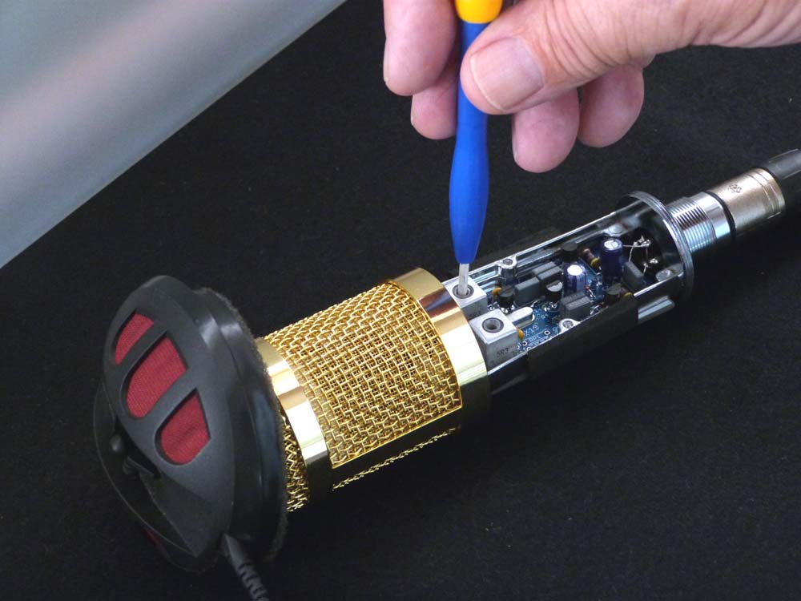
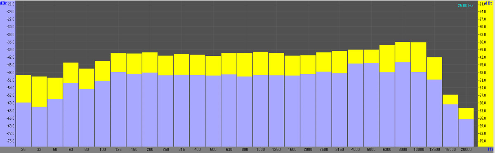

Calibration:
The most important factor affecting the performance of this microphone is the calibration of the two inductors ...
The overall circuitry is simple in concept, but a high quality output signal is heavily reliant on the 'noise free gain' obtained by careful tuning of both T1 and T2.
The simplest method of tuning these inductors is by connecting the microphone to a suitable phantom powered microphone pre-amplifier, and then presenting a sinusoidal 1KHz audio tone close to the microphone capsule (either via a loudspeaker or a headphone transducer) The inductor cores can then be adjusted - using a non-ferrous trimming tool (plastic or ceramic) - to maximise the audio output into the preamp. The image below illustrates a typical calibration configuration...

It is preferrable to monitor the pre-amp output via headphones... If there is a visual metering option also available ( audio level meter - spectrum analyser, etc) that can make the calibration even simpler - and more accurate.
Start by setting both cores near the mid position. Using your non-ferrous trimmer, turn T1 core until the maximum audio level is achieved. Note that this may well be quite low (until T2 is also calibrated) but it should be possible to detect the maximum signal.
Repeat the process with T2. At the optimum core position, the audio output should increase dramatically, giving a clear indication of the final setting.
Note that although there can be several 'peaks and troughs' in audio levels over the tuning range, the optimal setting can clearly be determined as the one with the highest audio output level.
Return to T1 and check for maximum gain, and a final 'tweak' of the T2 setting is suggested as well.
Performance:
As I do not have access to a complete range of audio test equipment - and certainly not to an anechoic chamber - I decided that trying to write a full 'specification' for this microphone was a bit too presumptuous!
So I have elected to compare the 'performance' against a known published specification for a commercial microphone -- in this case the series 4 (black) Rode NT1.
Noise floor:
The RF.AMX10 (v.6.0) has a self noise figure of around 10dB(A).
The signal to noise ratio (S/N ratio) of the microphone is thus c.84dB.
When fitted with a K67 capsule, the RF.AMX10 (v.6.0) has a sensitivity of c.-23dB, about 6dB more sensitive than the the new (2014) Rode NT1. That model - with its specified self noise floor at around 4.5dB(A) - is widely regarded as a low noise microphone. So with its higher sensitivity, the relative noise floor of the RF.AMX10 (v.6.0) is within around 2dB of the Rode NT1, for an identical input signal.
Frequency response:
A pink noise source was connected to a Sennheiser headphone transducer, which was then 1/3 octave equalised - as far as possible - to 'mimic' the published Rode NT1 curve. This source was than presented - at a distance of only c.20mm - to both microphones simultaneously. The mics were mounted in a closed box - filled with blankets - to try and minimise external acoustic interference ... The diagram below illustates the comparative results (RF.AMX10 is the blue curve):

As might be expected, the K.67 capsule shows some brightness in the mid range, with around a 3dB boost at 4.5KHz. There is also a second HF boost around 8KHz, which is pretty much standard for the cheap K67 type capsules. The HF seems to 'fall off' slightly less steeply than the NT1.
The LF response indications are much less reliable, as there was some extreme LF content from the surroundings, but it does appear to indicate a slightly steeper LF roll off than with the NT1. The value of C5 and C10 will determine the exact LF -3dB cut off point, so different values for these may be selected to change the LF response. (It maybe useful to note that the theoretical LF limit for an RF biased microphone is in fact DC... although it is probably undesirable to want to extend LF response that far!)
The HF response characteristics of the microphone can be modifed by adjusting the values of capacitors C9 and C13...With the values shown, the -3dB HF point is c.16KHz.
Distortion:
It has only been possible so far to do comparison tests for distortion, so that a common test set up allows for a comparison to be made between the RF.AMX10 and several other microphones.
You can download the results HERE (It's only a single page download)
Cardioid pattern:
The K67 capsule is specified as having a cardioid pattern. When used in the 'end address' configuration - as this example is - access to the rear of the capsule is made via the entire side aspects of the BM800 headbasket. This seems to offer excellent rejection to the side and rear of the mic. Quite what the actual pattern is has yet to be measured more precisely.
Sample audio:
The audio sample linked to here --
-- is a short speech test message using the RF.AMX10 -- It is an unprocessed 'raw' audio file. The only modification has been to apply an 80Hz high pass filter, to remove most of the low frequency 'room rumble' from the recording. It gives an idea of the response of the microphone, and of the residual noise floor component.
This audio sample here --
-- was recorded via a dbx286s mic pre-amp/processor, and gives an idea of what the RF.AMX10 sounds like as a speech microphone, with a small amount of audio processing added.
This is a 'raw' sample of acoustic guitar ... no processing at all --
For such a simple and low cost version of an 'RF bias' condenser microphone, I think the RF.AMX10 holds up quite well....